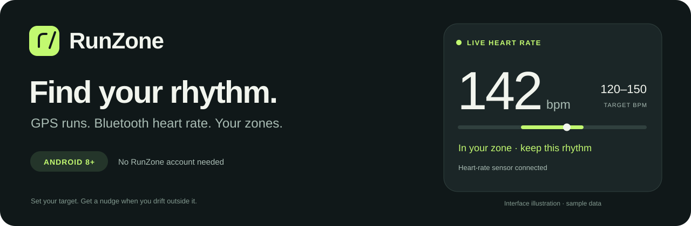

LATEST APPAndroid · Early release
RunZone.
Find your rhythm.
Track your route and pace with GPS. Pair a compatible Bluetooth heart-rate monitor to get sound and vibration alerts when you drift outside your target zone. Review saved runs and export them as TCX files.
Get RunZone on GitHubRequires Android 8.0 or newer. No RunZone account needed.
